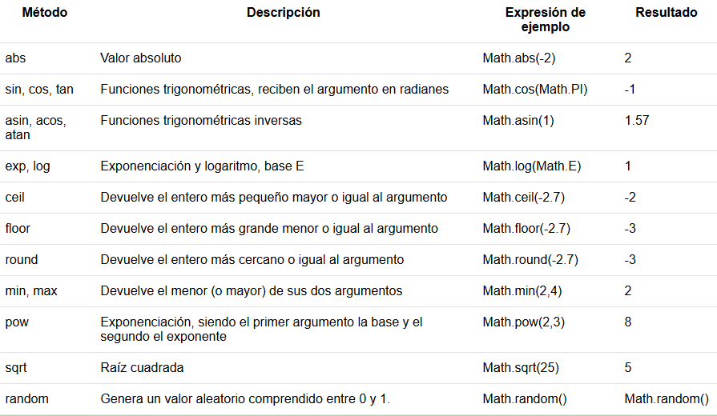

leccion uno del dia: uso de la clase "math"
para mayor informacion visita: Clase Marh()
estos son algunos metodos que puedes usar:

ejempl usando math.random()
Para generar un valor aleatorio comprendido entre 1 y 10 debemos plantear lo siguiente:
let num = parseInt(Math.random() * 10) + 1;
leccion 2 del dia: uso de la clase "String"
para mayor informacion visita la pagina: Clase String
un string es una cadena compueta por 1 o mas caracteres encerrados
en comilla simples o dobles
puedes concatenar cadenas de caracteres usando el sifno +
propiedad length
devuelve la cantidad de caracteres de un String
ejemplo
let nom='Juan';
document.write(nom.length); //Resultado 4
ejemplo pactico
metodos: charAt(pos)
retorna el caracter de la posicion indicada(pos) comienzan a enumerarse desde la posicion 0:
codigo
let nombre= prompt("ingrese una cadena de texto: " ,"juan");
let caracterPrimero=nombre.charAt(0);
document.write("la posicion 1 de la cadena " + nombre + " es: " + caracterPrimero);
document.write("la penultima poscion de la cadena " + nombre + " es: " + nombre.charAt(nombre.length-2));
document.write("la antepenultima posicion de la cadena " + nombre + " es: " + nombre.charAt(nombre.length-3));
resultado
substring(posInicial, posFinal)
devuelve una cadena de caracteres que se encuentra entre las posiciones indicadas.
las posiciones comienzan a contarse desde la posicion 0.
codigo
let hola = "Hola mundo cruel"
document.write("se extraen de la cadena de texto ...hola mundo cruel... desde la poscion 2,6" + hola.substring(2,6));
resultado
uso de indexOf
Devuelve la posición de la subcadena dentro de la cadena, o -1 en caso de no estar.
Tener en cuenta que puede retornar 0 si la subcadena coincide desde el primer carácter.
codigo
let nom='Rodriguez Pablo';
let pos=nom.indexOf('Pablo');
if (pos!=-1)
document.write ('Está el nombre Pablo en la variable nombre y comienza en la posicion: ' + pos);
resultado
uso de : toUpperCase() y toLowerCase()
convierten cadenas de texto en minuscula o mayusculas
ejemplos de uso
cadena1=cadena1.toUpperCase();
cadena1=cadena1.toLowerCase();